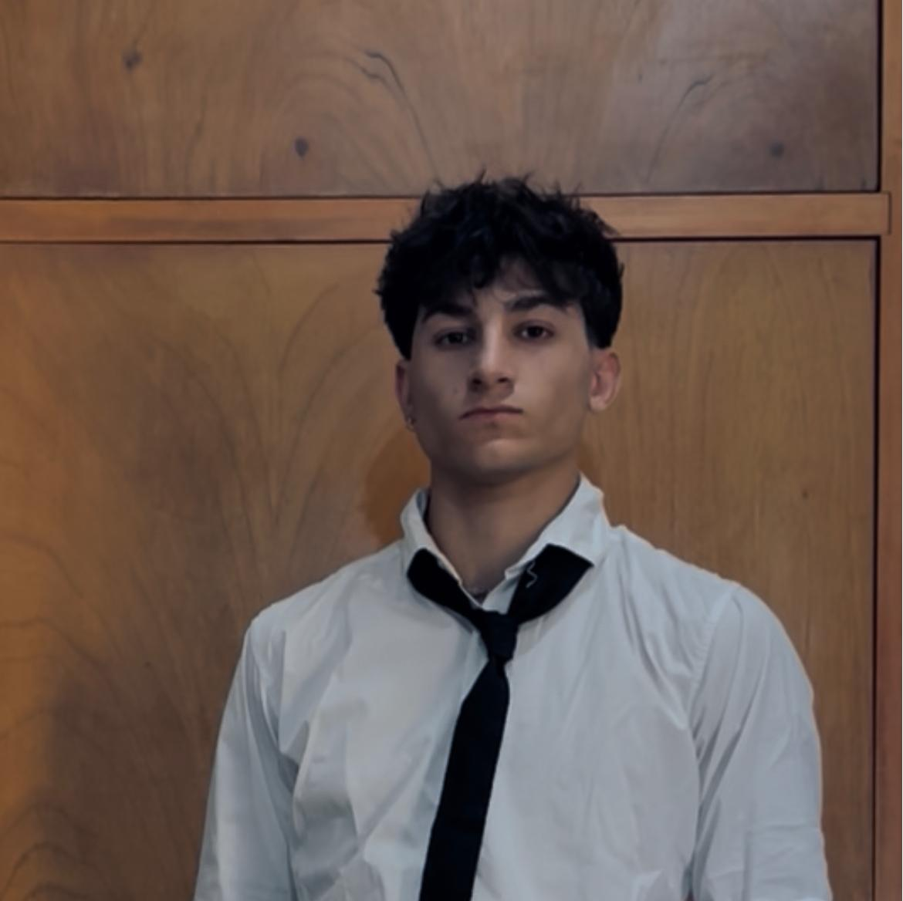

Valentin Napolitan Revay
Estudiante de Multimedia en UNLP. Diseño interfaces, construyo experiencias digitales y traduzco conceptos complejos a sistemas visuales funcionales.
Sobre mí
Con base técnica como Programador y una visión creativa en constante desarrollo, me especializo en la intersección entre el código y la estética. Mi enfoque actual se centra en el brutalismo digital, priorizando la legibilidad y la estructura sobre el adorno innecesario.
Stack & Disciplinas
- Diseño UI/UX y Branding
- Desarrollo Front-end (HTML/CSS)
- Motion Graphics y Blender